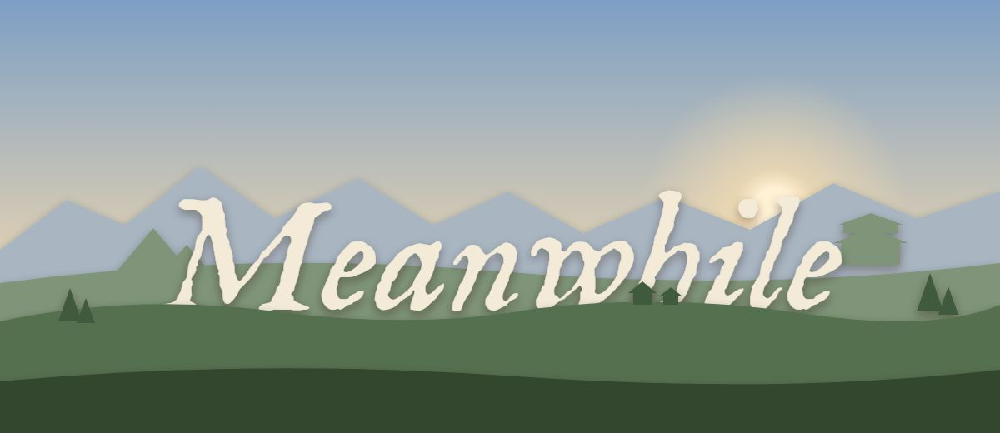
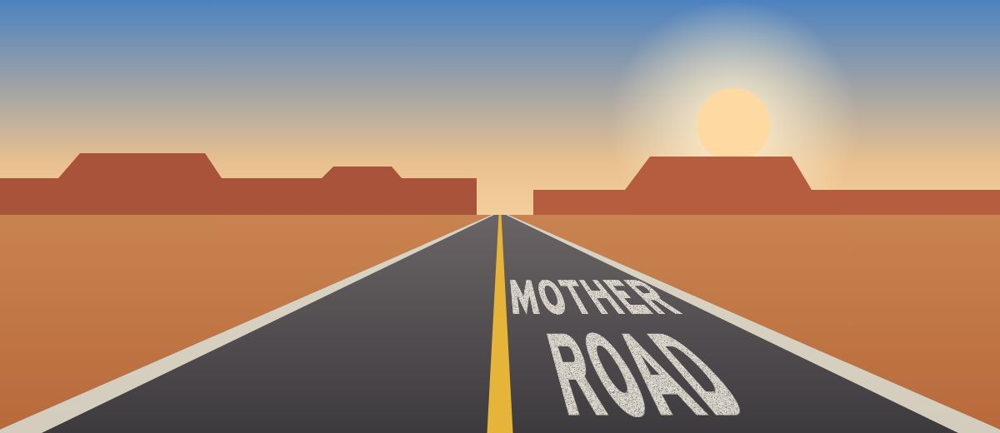
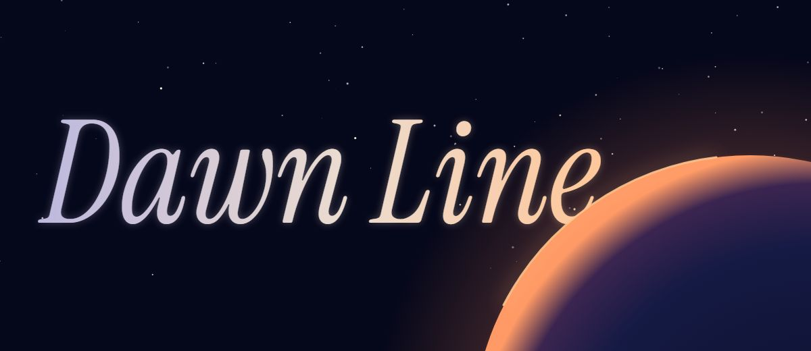
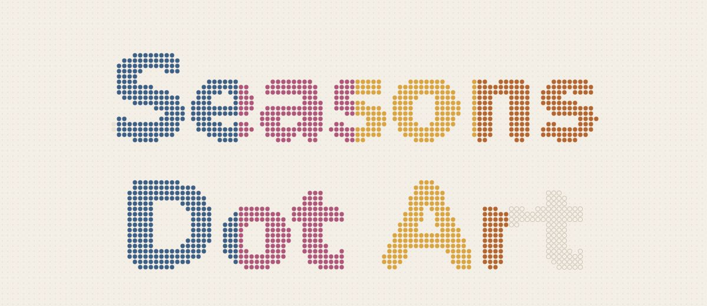
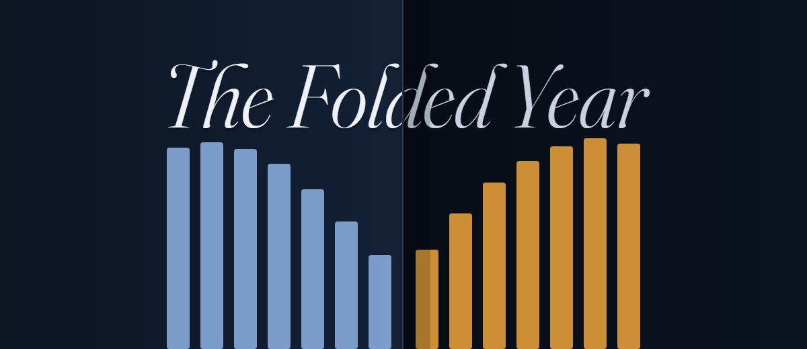
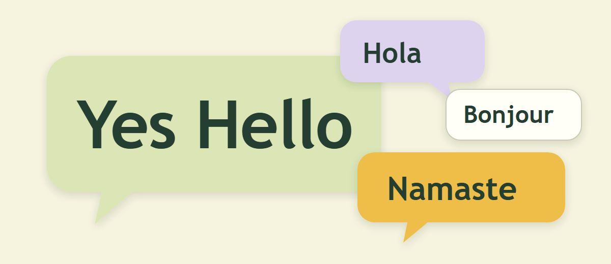
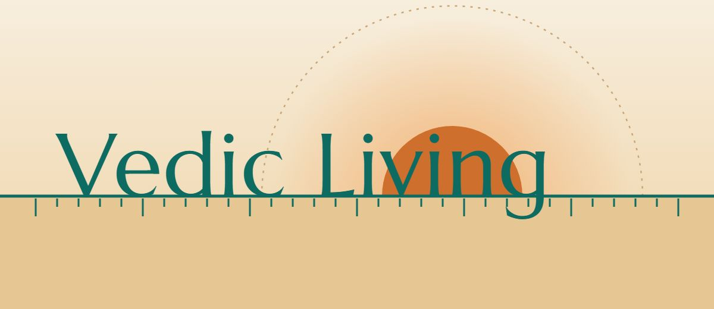

Meanwhile
What was happening everywhere, in any year of the last 12,000.

What was happening everywhere, in any year of the last 12,000.

Ride Route 66 in real time and real weather.

Watch the sunrise cross the Earth, live.

Color ten seasonal scenes, one dot at a time.

Fold the calendar in half and compare the seasons.

Travel the world through its greetings.

Your day on a sunrise-anchored Vedic clock.
This collection grows one experiment at a time.